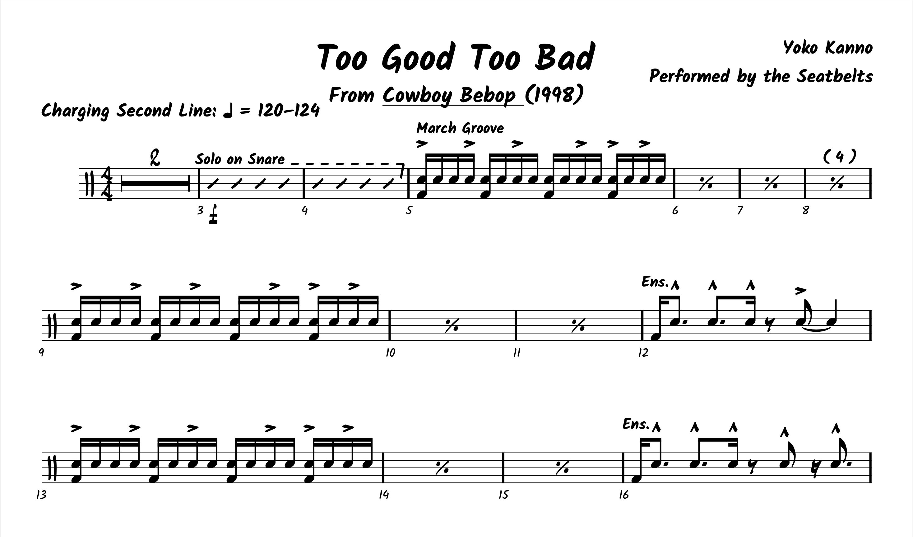
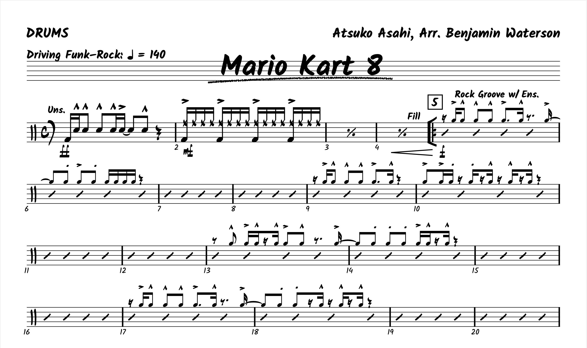
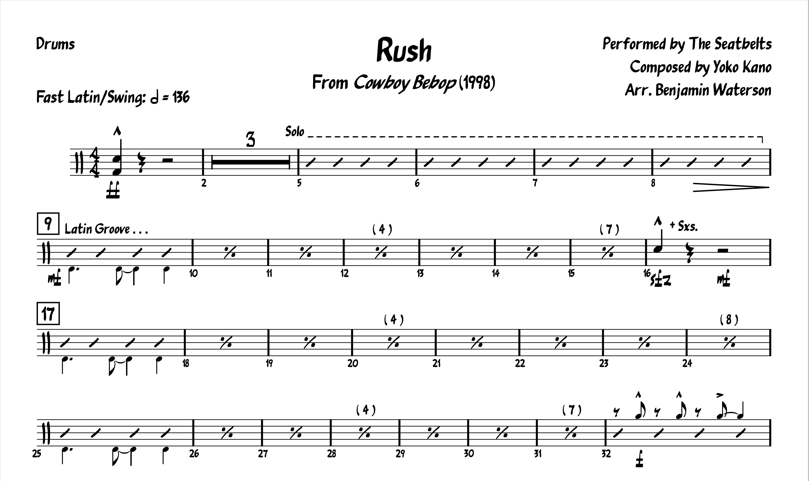

Tagged: Chart
Chart: “Too Good Too Bad” From Cowboy Bebop
Posted on December 5, 2021
So, I was caught off guard by the recent release of Netflix’s live–action Cowboy Bebop remake. I have heard about a live–action adaptation for over ten years now, but I stopped keeping up with the developments until I started seeing footage from Netflix’s version. And low and behold, it was finally released toward the end of November. Read More . . .
Chart: Mario Kart 8 Main Theme + Pratice Loop
Posted on August 22, 2021
I know I’m gonna sound like a weeb for saying this, but I must thank all the Japanese composers who have spent the last 20 years writing great big band music for their TV shows and video games. I mean, I know there’s probably more western entertainment with some killer (original) big band music that I just haven’t found yet… but in the meantime, the Land of The Rising Sun will keep me busy. Read More . . .
Chart: “Rush” from Cowboy Bebop
Posted on July 25, 2021
This week, I was going to write about MuseGroup, the parent company behind MuseScore. Since the start of this summer, there’s been a huge kerfuffle involving the MuseGroup’s control of Audacity. Most recently, the MuseGroup has been vaguely threatening a Chinese expatriate with refoulement in response to a MuseScore downloader browser extension.
The thing is, I don’t really know if I have anything to add to that discussion; much like the rest of the internet, MuseGroup’s behavior is a bit outrageous, and I have some abstract unease about the future of MuseScore. So instead, let’s talk about something else. Read More . . .
Chart: “Tank!” from Cowboy Bebop
Posted on February 21, 2021

Now that things are starting to warm up, I’ve started rewatching one of my favorite shows, which quite possibly has the most badass theme song ever:
Even if you’ve never heard this tune before, you should probably conclude by the 15 second mark that it’s a lot of fun to play on pretty much any instrument. And you know what? It is! Read More . . .
Chart: “Chainlink Charge” from Super Mario 3D World + Practice Loop
Posted on February 21, 2021

This project has a bit of a story behind it.
Todd Bishop over at Cruise Ship Drummer is a big fan of practice loops, which he usually makes himself and shares on YouTube. See what they’re all about on his website.
Meanwhile, about seven(!) years ago I was playing Super Mario 3D World for the first time, and I remember really digging the soundtrack, especially for levels like “Chainlink Charge”. Read More . . .
Drum Chart: “The Incredits” from The Incredibles
Posted on November 1, 2020

We need to take a break from the Buddy Rich Memorial Concert, because I have a special treat this week.
When The Incredibles 2 came out ~2 years ago, I gave the original a watch to get ready, and I totally forgot what a killer soundtrack the film has (courtesy of Michael Giacchino). It’s that reason alone that The Incredibles is probably my favorite Pixar film, although I doubt I fully appreciated the score when I was younger. As a fun piece of trivia, this was actually Giacchino’s first Pixar collaboration. And what an effort. Read More . . .